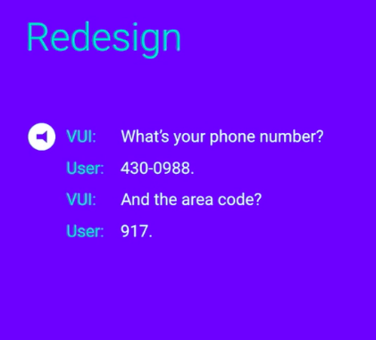
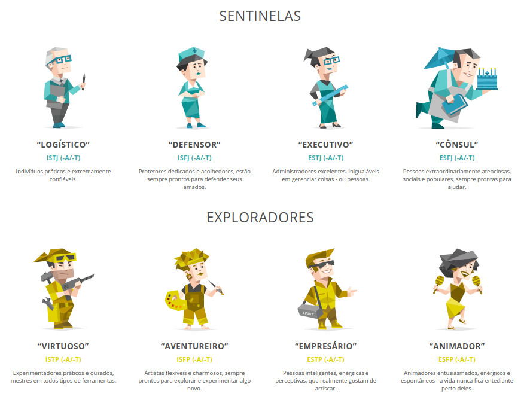

Primeiro computador com interface de voz
Internet de todas as coisas
- Internet das Coisas vs Internet de todas as coisas
Primeira Era
- 1950: reconhecimento de um dígito
- 2000: Diversos sistemas estavam disponíveis.
- Nos EUA, os usuários podiam ligar para pegar informações de tráfegos, ações, atrasos de ônibus (antes dos smartfones)
Aplicações mobile
- Teorias dos antigos sistemas de voz, são redescobertas.
- Dispostivos multi-modos
- Usuários podem ser interrompidos?
- Quando eles podem falar?
- Balancear visuais
Por que utilizar Interface por voz?
- Velocidade: falamos mais rápido do que digitamos.
- Mãos livres: podemos consultar enquanto estamos cozinhando, dirigindo, longe do dispositivo. Mais prático.
- Intuitivo: Não precisamos ensinar as pessoas a utilizarem a interface, todos sabemos falar.
- Empatia: A utilização de entonação, volume e velocidade da pronuncia agrega informações.
Quando não utilizar
- Espaços públicos
- Desconforto em falar com computador
- Alguns preferem digitar
- Privacidade
Requisitos para o diálogo
Para estabelecer um diálogo de voz, entre um humano e um computador, precisamos de duas tecnologias:
- reconhecimento de voz (automated speech recognition - ASR)
- entendimento da linguagem natural (natural-language understanding - NLU)
Princípio da cooperatividade
Para que um diálogo seja harmonioso, ele deve seguir o princípio da cooperatividade, dividido em 4 partes:
- Qualidade: Dizer o que acreditamos ser verdade
- Quantidade: Dizer as informações necessárias, não falar mais do que necessário.
- Relevância: Falar o que é relevante para a conversa em andamento.
- Maneiras: Tentar ser claro e explicar coisas que façam sentido para os outros.
Como sabemos que estamos errando:
- Qualidade: Como posso lhe ajuda? - mas eu só consigo auxiliar com situações específicas.
- Quantidade: Por favor, escute atentamente porque nossas opções mudaram (...)
- Relevância: Fornecer instruções que não são úteis no momento. Ex: explicar política de troca para alguém que ainda não comprou.
- Maneiras: Utilização de jargões técnicos.
Chatbots
- Bots não substituem aplicativos.
- Melhores aplicativos substituem aplicativos.
Diálogo extraídos do canal Google Developers
Diálogo 1

Diálogo 2
Diálogo 3

Diálogo 4

Diálogo 5
Diálogo 6

Diálogo 7

Diálogo 8

Diálogo 9

Diálogo 10




Marvin, o Andróide Paranóide – Guia do Mochileiro das Galáxias
16 Personalidades

Assistente do Google
Dispostivo: Google Home
Vídeo de apresentação do Google Home
Amazon Alexa
Alexa
- Alexa / serviços
- Alexa skills
- Podemos criar os skills e vendê-lo.
- Podemos criar componentes que são compatíveis com o Alexa
- Dispositivos: Echo, smart plug e outros
Alexa Development 101 - Full Amazon Echo tutorial course in one video!
Amazon Echo

Tomada inteligente
AmazonBasics Microwave e Wall Clock
Cortana: assistente da Microsoft (Windows 10)
Marmiratia ou Pizzaria
- Bot (através do WhatsApp) para Marmiratia ou Pizzaria
- Equipamento para impressão dos pedidos e interface administrativa com botões físicos para a cozinha
- Startup
Secretaria de Municipal do Meio Ambiente
- Bot para a página da Secretaria de Municipal do Meio Ambiente
- Aplicação de Google Assistente para a Secretaria de Municipal do Meio Ambiente
- Pesquisa sobre personalidade virtual do assistente
- Startup: sistema para Secretarias Municipais do Meio Ambiente
Limarka: sistema para TCC em Markdown
- Atualização do Limarka para não necessitar do Latex
Misssão Braços Abertos
- Bot para o Facebook
Documentação de software
Elaboração de documentação de softwares (aplicativos de celular), utilizando esta interface, utilizada por: